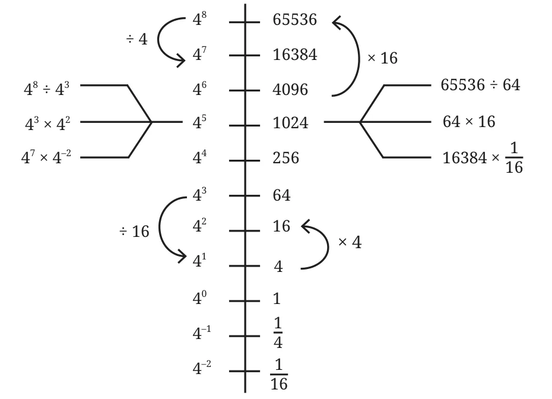

Let us arrange the powers of 4 along a line.

Can we say that 16384 (\(4^7\)) is 16 (\(4^2\)) times larger than 1,024 (\(4^5\))? Yes, since \(4^7 \div 4^5 = 4^2\).
How many times larger than \(4^{-2}\) is \(4^2\)?
Use the power line for 7 to answer the following questions.
| \(7^7\) | 823543 | \(2{,}401 \times 49 =\) ____ |
| \(7^6\) | 117649 | \(49^3 =\) ____ |
| \(7^5\) | 16807 | \(343 \times 2{,}401 =\) ____ |
| \(7^4\) | 2401 | \(\frac{16{,}807}{49} =\) ____ |
| \(7^3\) | 343 | \(\frac{7}{343} =\) ____ |
| \(7^2\) | 49 | \(\frac{16{,}807}{8{,}23{,}543} =\) ____ |
| \(7^1\) | 7 | \(1{,}17{,}649 \times \frac{1}{343} =\) ____ |
| \(7^0\) | 1 | \(\frac{1}{343} \times \frac{1}{343} =\) ____ |
| \(7^{-1}\) | \(\frac{1}{7}\) | |
| \(7^{-2}\) | \(\frac{1}{49}\) | |
| \(7^{-3}\) | \(\frac{1}{343}\) | |
| \(7^{-4}\) | \(\frac{1}{2401}\) |